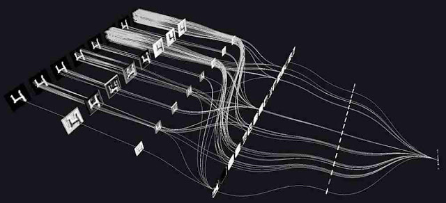

MACHINE LEARNING
ImageNet Classification with Deep Convolutional Neural Networks: AlexNet

AlexNet, an application using Convolutional Neural Networks (CNN) for classifying images, famously won the 2012 ImageNet LSVRC-2012 competition by a large margin (15.3% VS 26.2% (second place) error rates).
The main contributions of the paper are as follows:
- Largest trained CNN model as of 2012. The dataset used for training was on the subsets of ImageNet.
- A highly-optimized GPU implementation of 2D convolution and associated operations used in training CNN.
The AlexNet consists of 8 layers: 5 convolution and 3 fully-connected layers. The main features of AlexNet are:
- ReLU Non-Linearity: The Deep CNN using ReLU instead of the traditional $ f(x) = tanh(x) $ or $ f(x) = (1 +e^{−x})^{−1} $
- Training on Multiple GPUs
- Local Response Normalization
- Overlapping Pooling

** Strengths of paper and mechanisms** ** Weaknesses of paper and mechanism** ** Detailed comments** ** Ideas for improvement** ** Lessons learned**
Reference: Krizhevsky, Alex, Ilya Sutskever, and Geoffrey E. Hinton. “Imagenet classification with deep convolutional neural networks.” Advances in neural information processing systems. 2012.